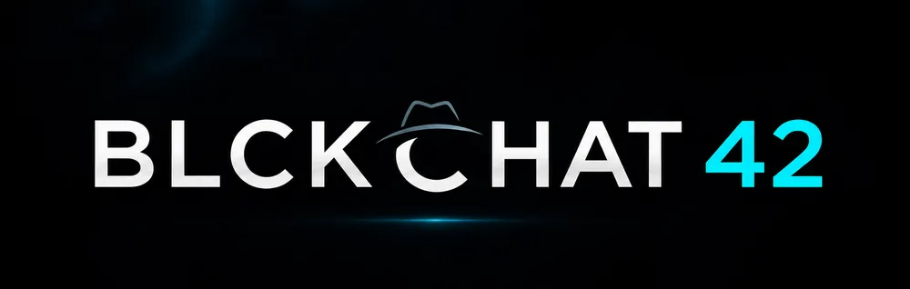

Install
Install the SMS-first Android test app. No GitHub account or shared Wi-Fi required.

LESS SETUP. MORE CONVERSATION.
Encrypted conversations across distances. The experimental Android build exchanges protected SMS messages between two phones on separate networks. GitHub-backed group delivery is the next transport.
Designed in C11 · One visual identity across iOS, Android, macOS, Windows and Linux.
01 / DISTRIBUTION
Android SMS-first experimental test APK is published through this site. Future stable installers will appear in GitHub Releases.
ANDROID / ENCRYPTED SMS ALPHA 0.4
Phone A (Admin) and Phone B can exchange encrypted text through the normal SMS network, even when far apart. Both devices exchange public keys and verify a safety code. Android 12+ only. This experimental two-person test is not independently audited, has no automatic SMS receive and does not yet support Phone C group messaging. Use non-sensitive test messages only.
Get the SMS-first Android test APKAndroid 12+ · no shared Wi-Fi · no GitHub account · safety-code verification required
Already testing? Use the experimental APK and Norwegian step-by-step instructions on the installation page. Production releases will be published separately after security and compatibility testing.
All releases ↗ Browse source ↗02 / GETTING STARTED
SMS peer-to-peer testing is available on Android 12+. The cloud gateway and multi-user flow are still planned.
Install the SMS-first Android test app. No GitHub account or shared Wi-Fi required.
Both devices exchange public key codes by SMS and compare a safety number over a trusted call.
After confirmation, both devices send ciphertext through the normal SMS app. No GitHub account.
03 / ENGINEERING
The application logic and UI scene model live in our own C11 libraries. Thin operating-system adapters handle windows, accessibility, text input and secure credential storage.
GitHub Pages serves this public site and download discovery. It is not the private guest messaging gateway. Invitation tokens must never be published here.
Explore BLCKUI architecture ↗